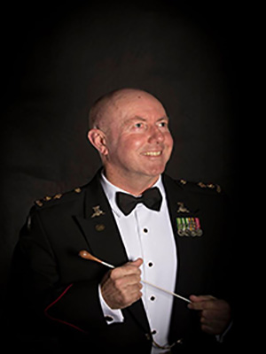
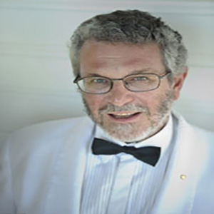

Craig Johnson (Conductor)
Lieutenant Colonel Craig Johnson, born and raised in Sydney, NSW, joined the Australian Regular Army as a musician in 1977. He subsequently served in Army bands in Sydney, Perth and Canberra before being selected to attend Army Band Officer training at the Defence Force School of Music in Melbourne. Upon graduation he was awarded the Commanding Officer’s Prize for the Best Conductor of the Course....

Mario Dobernig (Conductor)
Mario Dobernig is Conductor in Chief and Artistic Director for the Art of Sound Orchestra, Preston Symphony Orchestra, Victoria Chorale, the Ballarat Wind Orchestra and the Artistic Director of the highly successful Whitley College Music Festival Series.....
Mark Shiell (Conductor)
Mark has guest-conducted ensembles including the Melbourne Symphony Orchestra, West Australian Symphony, Moscow Symphony Orchestra, State Academic Symphony Orchestra of St. Petersburg, Victorian Opera, Orchestra Ensemble Kanazawa, Canberra Symphony Orchestra, Sydney Sinfonia, Melbourne Youth Orchestra, University of Melbourne Symphony Orchestra and the Orchestras of the State Music Camps in Melbourne and Adelaide....
Raymond Yong (Conductor)
Raymond Yong was born in Malaysia, emigrating to Australia at the age of two. He received his initial musical training in Perth, performing regularly in public piano recitals from an early age. It was in High School that he forst took to the podium as a conductor, directing his school orchestra and choir...

Richard McIntyre, OAM (Conductor)
Richard McIntyre, OAM, BMus (University of Sydney) has maintained a long and distinguished career as bassoonist, music educator, conductor and arranger. A Composition graduate from Sydney University, he was appointed Associate Principal Bassoon with the Sydney Symphony Orchestra as a 20-year-old in 1968, moving to The Canberra School of Music as a foundation member of the Canberra Wind Soloists in 1978. With this renowned quintet, he recorded and toured internationally....